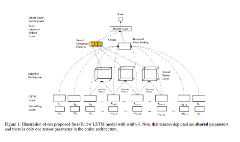
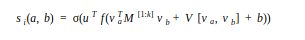
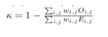
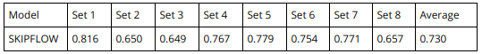
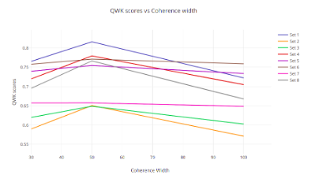
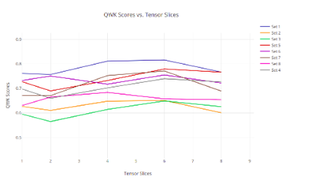

Automatic Text Scoring
Introduction
The Automatic Text Scoring system is a machine learning model which learns to approximate the marking process with supervised learning. In this project, we intend to implement one such system called SKIPFLOW. (paper link)
Essays are typically long sequences and therefore the memorization capability of the LSTM network may be insufficient. This paper tries to address this problem through implicit access to multiple snapshots that can act as a protection against vanishing gradients.
SKIPFLOW mechanism that models relationships between snapshots of the hidden representations of a long short-term memory (LSTM) network as it reads
Architecture

Embedding Layer:
Each word in the essay is represented by a vector and the essay is a list of vectors. Each essay is represented as a fixed length array which is padded to the maximum length. This representation of the essay along with the target score is fed into the next layer.
LSTM Layer:
The LSTM outputs a hidden vector htthat reflects the semantic representation of the essay at position t. To select the final representation of the essay, a temporal mean pool is applied to all LSTM outputs.
Neural Tensor Layer:
A tensor layer is applied between the two LSTM layers to model the relationship between two LSTM outputs.

Fully Connected Hidden Layer:
All the scalar values that are obtained from the tensor layer are concatenated together to form the neural coherence feature vector. The essay representation that is obtained from a mean pooling over all hidden states is then concatenated with the coherence feature vector.
Final linear layer with Sigmoid activation function:
Finally, we pass the output of the hidden layer into a final regression layer. The output at this final layer is the normalized score of the essay.
Learning and optimisation:
We use the mean square error loss function. The parameters are then optimized using gradient descent.
Implementation:
Dataset:
We used the ASAP dataset for evaluation. This comes from the competition which was organized and sponsored by the William and Flora Hewlett Foundation (Hewlett) and ran on Kaggle from 10/2/12 to 30/4/12. This dataset contains 8 essay prompts each of which can be interpreted as a different essay topic along with a different genre such as argumentative or narrative.
Implementation of Models:
The embeddings were created using the Glove representation for words. We used the keras library to implement all the neural networks for the model. In addition, we have used numpy and pandas libraries for data manipulation.
Evaluation Metric:
The evaluation metric used is the Quadratic Weighted Kappa (QWK) which measures agreement between raters and is a commonly used metric for ATS systems. In the project, we have used the scikit-learn module for evaluation purposes.

A jupyter notebook demonstration can be found here.
Results:
The QWK values for the SKIPFLOW model:
All the results reported are on the validation set. Train-Validate split ratio is 0.7-0.3.
We have noticed that the results are the best at coherence width 𝛅 = 50 and Tensor slices k = 6. Our best results for different essay sets are as follows:

These results are on par with the results reported in the paper.
Effect of Hyper Parameters:
Coherence width: Most optimal coherence width is found to be 50.

Tensor slices: Most optimal no of tensor slices is found to be 6.

Conclusion:
- We have successfully implemented the paper have achieved results on par with the paper.
- Implemented both the tensor and the bilinear scenarios.
- Also implemented the baseline Vanilla LSTM and showed that our model significantly outperforms.
- Performed extensive hyper-parameter tuning to determine the optimal coherence width and tensor slices.